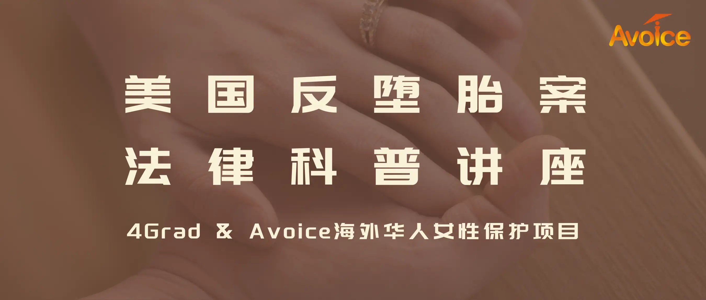
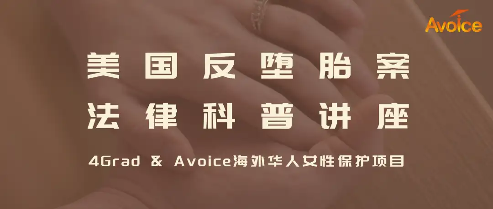
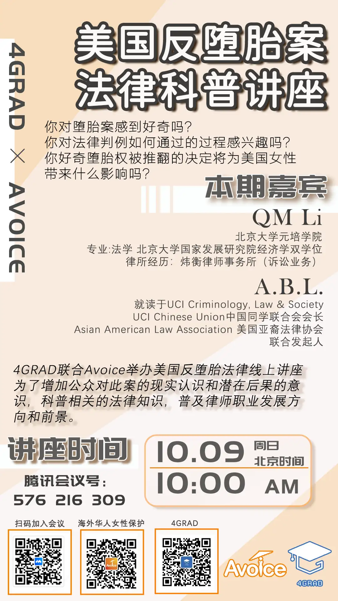
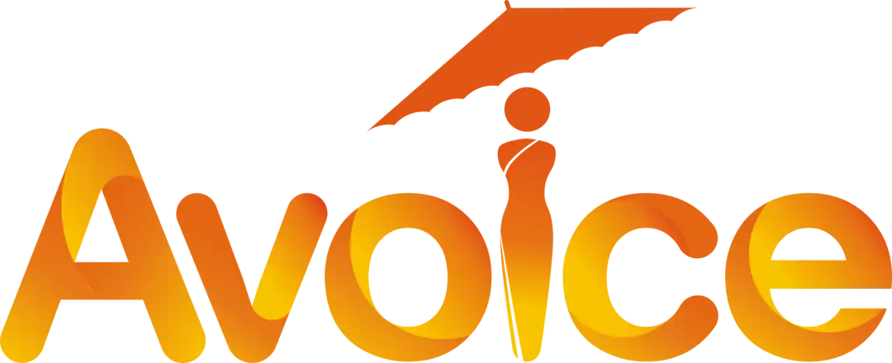

引言：
1973年对美国“罗诉韦德案”（Roe v. Wade）的历史性裁决承认妇女有堕胎的宪法权利并且使堕胎在全美合法化；近五十年后的今天，最高法院推翻了这裁决，认为联邦宪法没有赋予堕胎的权利，是否允许堕胎应该由各州自行决定，为各州颁布法令禁止堕胎打开了大门。美国最高法院有史以来首次取消了一项涉及最基本人道考量的既定宪法权利，使得女性失去了决定自己身体状况的尊严和自主权。

为了增加公众对此案的现实认识和潜在后果的意识，科普相关的法律知识，对律师职业发展方向和前景进行普及，4Grad与Avoice计划在10月9日举办美国反堕胎案法律科普线上讲座。
联合举办方
4Grad(For Grad)是由海内外优秀同学与毕业生组成，旨在为海内外菁英搭建一座公益性质信息交互平台。我们与海内外名校硕士博士就读者、优秀毕业生紧密联系，共同搭建为海内外青年领袖服务的公益性质交流与共享平台，共创多元文化的温暖社群。至今，4Grad已举办了4场线下活动，从北大光华青年说论坛到哥伦比亚中国论坛，各方菁英力量汇聚一堂，东西方思想与理念相互碰撞。4Grad举办线上活动数十场，其中与美西南学联协办了1000+观众的申研分享会，总共邀请了30+位来自全美Top15学校就读的研究生与就职于全球顶尖企业的学长学姐，共计参与人数6000+。

Avoice是海外华人女性保护项目（Against Violence to Overseas Chinese Women Program）。致力于消除性别暴力、促进性别平等，为面临家暴威胁的海外华侨华人女性提供充分、持续的保护和救助。项目通过与政府部门、海外华人组织、社会组织、行业专家等建立合作网络，联合更广泛的青年公益力量，倡导公众对海外华人女性生活困境的关注和支持，为她们创造安全、平等的生存和发展环境，帮助她们从家庭暴力的受害者，成长为推动性别平等与保护弱势群体的倡导者和实践者。
本期嘉宾
QM Li
北京大学元培学院
专业：法学
北京大学国家发展研究院经济学双学位
律所经历：炜衡律师事务所（诉讼业务）
A.B.L
就读于UCI Criminology, Law & Society
UCI Chinese Union 中国同学联合会会长
Asian American Law Association Co-Founder
美国亚裔法律协会 联合发起人
撰文｜Parapluie
排版、封面制作 I Dai
海报｜Yesenia


&